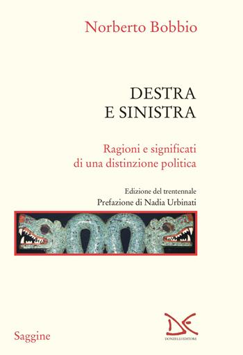

10:36 · 3 OPERE
Sul libro "Destra e Sinistra" di Domenico Conversa.
Il filo del discorso
La recensione presenta il saggio di Domenico Conversa attraverso il confronto con l’omonimo libro di Norberto Bobbio. Il percorso segue la trasformazione delle categorie di destra e sinistra dopo la crisi dei partiti tradizionali e l’affermazione di una politica centrata sulla comunicazione e sul mercato. Dr Divago riprende la distinzione fra uguaglianza e disuguaglianza, poi richiama Horkheimer per interrogare il fondamento economico comune a schieramenti apparentemente opposti. Il commento si concentra anche sul linguaggio politico, sulle promesse dei movimenti e sulla distanza fra formule pubbliche e bisogni concreti. Nella conclusione, il valore attribuito al libro sta nella capacità di porre domande e usare l’ironia per riaprire il confronto. Le valutazioni politiche sono quelle espresse nella recensione, che invita a discutere le categorie anziché archiviarle.
I libri nel discorso

Destra e sinistra
Copertina: Youcanprint, 2025
Titolo e autore presenti nei sottotitoli italiani a 00:05–00:11; sottotitolo dell’opera a 00:54–01:00. Dati bibliografici riscontrati presso l’editore; ascolto di controllo ancora da completare.
Passaggio 0:06 ↗ · Fonti e libro ↗
Destra e sinistra
Copertina: Donzelli, 2023
Autore presente a 00:21, titolo a 00:33. Il sottotitolo è un’integrazione bibliografica, non una frase attribuita al video. Ascolto di controllo ancora da completare.
Passaggio 0:33 ↗ · Fonti e libro ↗
Crepuscolo
Identificazione probabile
Copertina: Originale tedesco, 1934
Autore menzionato intorno a 04:08; a 04:17 i sottotitoli riportano un titolo tedesco deformato. Probabile riferimento a Dämmerung, pubblicato in italiano come Crepuscolo. Da confermare tramite ascolto.
Passaggio 4:17 ↗ · Fonti e libro ↗Minutaggi ricavati da testi automatici, da riascoltare. Le identificazioni probabili sono segnalate accanto ai libri.